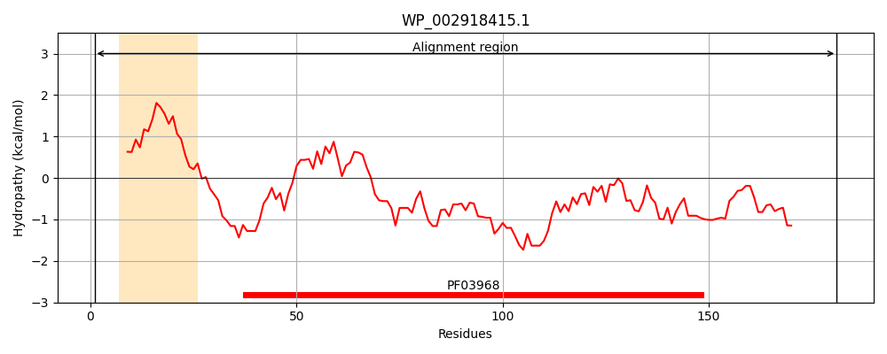
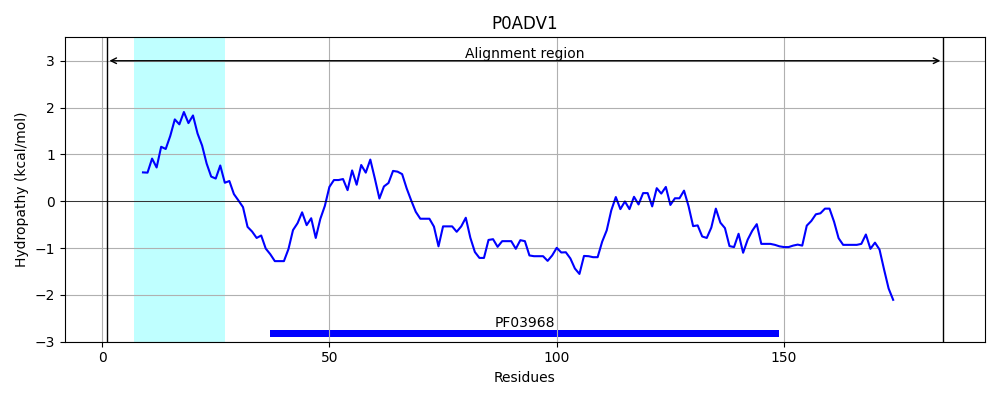
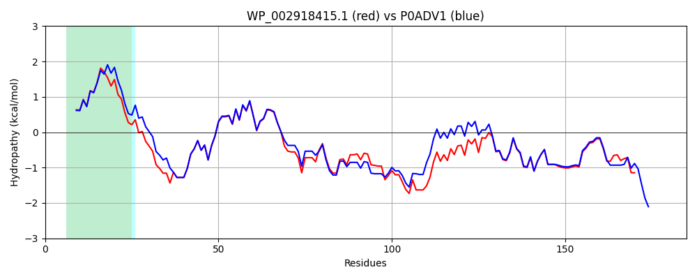

Hit Accession: P0ADV1
Hit TCID: 1.B.42.1.2
Hit Description: gnl|BL_ORD_ID|8759 gnl|TC-DB|P0ADV1|1.B.42.1.2 Lipopolysaccharide export system protein LptA OS=Escherichia coli (strain K12) GN=lptA PE=1 SV=1
Mach Len: 185
e:0.000000
Query TMS Count : 1
Hit TMS Count: 1
TMS-Overlap Score: 1.000000
Predicted Substrates:CHEBI:6494;lipopolysaccharide
BLAST Alignment:
Score: 767 , Bit scores: 300 bits, E-value: 1.4e-105, Alignment length: 185, Percentage identity: 81
Query: 1 MKFRTNKLSLKIALAGALLAASLPALAKTGDTDQPIHIESDQQSLDMQGNVVTFTGNVVVTQGTIKINADKVVVTRPGNEKGKEVIEGFGNPATFYQMQDNGKPVKGRASKMRYELQNDYVVLTGNAYLEQLDSNIKGDKITYLVKEQKMQAFSDKGRRVTTVLVPSELQDKSGN----QQKKSN 181
MKF+TNKLSL + LA +LLAAS+PA A TGDTDQPIHIESDQQSLDMQGNVVTFTGNV+VTQGTIKINADKVVVTRPG E+GKEVI+G+G PATFYQMQDNGKPV+G AS+M YEL D+VVLTGNAYL+Q+DSNIKGDKITYLVKEQKMQAFSDKG+RVTTVLVPS+LQDK+ QKK N
Sbjct: 1 MKFKTNKLSLNLVLASSLLAASIPAFAVTGDTDQPIHIESDQQSLDMQGNVVTFTGNVIVTQGTIKINADKVVVTRPGGEQGKEVIDGYGKPATFYQMQDNGKPVEGHASQMHYELAKDFVVLTGNAYLQQVDSNIKGDKITYLVKEQKMQAFSDKGKRVTTVLVPSQLQDKNNKGQTPAQKKGN 185 | Protein Hydropathy Plots: |
|---|
|  |  |
Pairwise Alignment-Hydropathy Plot:
|
|---|
|  |